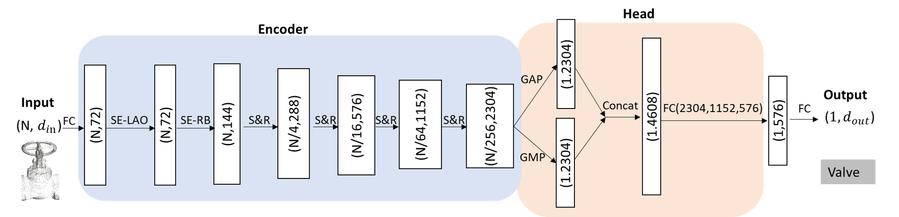
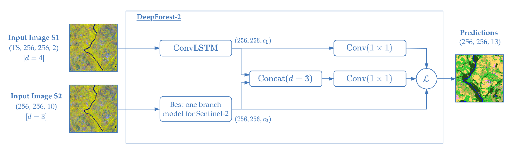
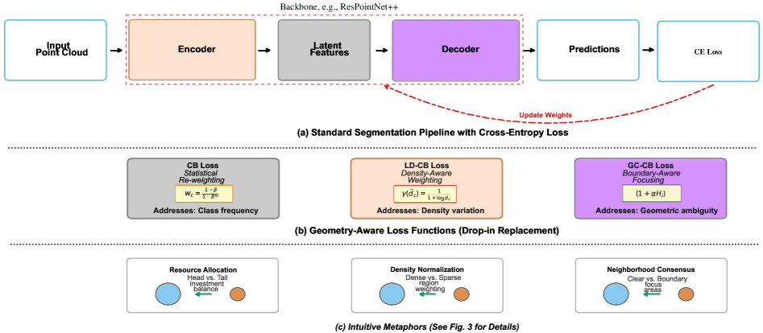

|
Chao YIN (尹超) Research Scientist Point Cloud Intelligent Processing & BIM Modeling I am a research scientist working on point cloud intelligent processing and BIM modeling. I earned my PhD from the Hong Kong University of Science and Technology (HKUST) from 2018 Aug to 2022 Aug, advised by Prof. Jack C.P. Cheng, and my MPhil in Cartography and Geographic Information Systems from Wuhan University (2013), advised by Prof. Zhongliang Fu. My research spans 3D point cloud processing, deep learning, multi-modal AI (foundation models and 2D/3D LLMs), weakly-supervised and long-tailed learning, and remote sensing applications. |
|
News
- [2026] New paper on multimodal LLMs for indoor building component understanding accepted to Automation in Construction.
- [2026] Released Industrial3D, the largest terrestrial LiDAR dataset for industrial MEP facilities (612M points). [arXiv] [Code]
- [2026] New preprint on long-tailed industrial point cloud segmentation (LongTail3D) — resolving primitive-sharing ambiguity via spatial context constraints. [arXiv] [Code]
- [2026] Paper on semi-supervised architectural heritage classification published in ISPRS IJGI.
- [2023] Awarded PI grants from the Guangdong Overseas Postdoctoral Program and the China Postdoctoral Science Foundation.
- [2022] Received my Ph.D. from HKUST on 3D point cloud processing and BIM modeling.
- [2019] Won the Best Paper Award at ICCBEI for a deep learning-based scan-to-BIM framework.
Publications
Published Journal Papers (Selected; * denotes corresponding author; yellow = key works)
For the full and up-to-date list, see my Google Scholar profile.


|
From Geometric Labels to Semantic Understanding of Indoor Building Components Using Multimodal Large Language Models S. Jing, Chao YIN* Automation in Construction, 2026 JCR Q1, IF: 10.5 [Accepted] @article{jing2026geometric,
title = {From Geometric Labels to Semantic Understanding of Indoor Building Components Using Multimodal Large Language Models},
author = {Jing, S. and Yin, Chao},
journal = {Automation in Construction},
year = {2026}
}
A multimodal large language model framework that moves beyond geometric labels toward semantic understanding of indoor building components. |

|
Semi-Supervised AI for Architectural Heritage Classification and Style Lineage Discovery in Chinese Traditional Settlements Q. Han, Z. Wang, Chao YIN*, Z. Hou, T. Yao ISPRS International Journal of Geo-Information, vol. 15, no. 5, p. 221, 2026 MDPI @article{han2026semisupervised,
title = {Semi-Supervised AI for Architectural Heritage Classification and Style Lineage Discovery in Chinese Traditional Settlements},
author = {Han, Q. and Wang, Z. and Yin, Chao and Hou, Z. and Yao, T.},
journal = {ISPRS International Journal of Geo-Information},
volume = {15},
number = {5},
pages = {221},
year = {2026},
doi = {10.3390/ijgi15050221}
}
A semi-supervised AI framework for architectural heritage classification and style lineage discovery in Chinese traditional settlements. |

|
Omni-Scan2BIM: A ready-to-use Scan2BIM approach based on vision foundation models for MEP scenes B. Wang, Z. Chen, M. Li, Q. Wang, Chao YIN, J. C. P. Cheng Automation in Construction, vol. 162, p. 105384, 2024 JCR Q1, IF: 10.5 @article{wang2024omni,
title = {Omni-Scan2BIM: A ready-to-use Scan2BIM approach based on vision foundation models for MEP scenes},
author = {Wang, B. and Chen, Z. and Li, M. and Wang, Q. and Yin, Chao and Cheng, Jack C. P.},
journal = {Automation in Construction},
volume = {162},
pages = {105384},
year = {2024},
doi = {10.1016/j.autcon.2024.105384}
}
A comprehensive Scan2BIM approach leveraging vision foundation models for automated MEP scene understanding and BIM reconstruction. |

|
Label-efficient semantic segmentation of large-scale industrial point clouds using weakly supervised learning Chao YIN, B. Yang, J. C. P. Cheng*, V. J. L. Gan*, B. Wang, J. Yang Automation in Construction, vol. 148, p. 104757, 2023 JCR Q1, IF: 10.5 DOI SQN-TensorFlow★ 14 SQN-PyTorch BibTeX @article{yin2023label,
title = {Label-efficient semantic segmentation of large-scale industrial point clouds using weakly supervised learning},
author = {Yin, Chao and Yang, B. and Cheng, Jack C. P. and Gan, Vincent J. L. and Wang, B. and Yang, J.},
journal = {Automation in Construction},
volume = {148},
pages = {104757},
year = {2023},
doi = {10.1016/j.autcon.2023.104757}
}
A weakly supervised learning framework for semantic segmentation of large-scale industrial point clouds that drastically reduces annotation effort while retaining accuracy. |

|
Robot-assisted mobile scanning for automated 3D reconstruction and point cloud semantic segmentation of building interiors D. Hu, V. J. L. Gan*, Chao YIN Automation in Construction, vol. 152, p. 104949, 2023 JCR Q1, IF: 10.5 @article{hu2023robot,
title = {Robot-assisted mobile scanning for automated 3D reconstruction and point cloud semantic segmentation of building interiors},
author = {Hu, D. and Gan, Vincent J. L. and Yin, Chao},
journal = {Automation in Construction},
volume = {152},
pages = {104949},
year = {2023},
doi = {10.1016/j.autcon.2023.104949}
}
A robotic mobile scanning system integrating 3D reconstruction with real-time point cloud semantic segmentation for building interiors. |
|

|
Automated Classification of Piping Components from 3D LiDAR Point Clouds using SE-PseudoGrid Chao YIN, J. C. P. Cheng*, B. Wang, V. J. L. Gan* Automation in Construction, vol. 139, p. 104300, 2022 JCR Q1, IF: 10.5 @article{yin2022automated,
title = {Automated classification of piping components from 3D LiDAR point clouds using SE-PseudoGrid},
author = {Yin, Chao and Cheng, Jack C. P. and Wang, B. and Gan, Vincent J. L.},
journal = {Automation in Construction},
volume = {139},
pages = {104300},
year = {2022},
doi = {10.1016/j.autcon.2022.104300}
}
SE-PseudoGrid, a squeeze-and-excitation network with pseudo-grid representation for automated piping-component classification from LiDAR data. |
|

|
Towards Classification of Architectural Styles of Chinese Traditional Settlements Using Deep Learning: A Dataset, a New Framework, and Its Interpretability Q. Han, Chao YIN*, Y. Deng, P. Liu Remote Sensing, vol. 14, no. 20, 2022 JCR Q2, IF: 5.3 @article{han2022towards,
title = {Towards Classification of Architectural Styles of Chinese Traditional Settlements Using Deep Learning: A Dataset, a New Framework, and Its Interpretability},
author = {Han, Q. and Yin, Chao and Deng, Y. and Liu, P.},
journal = {Remote Sensing},
volume = {14},
number = {20},
pages = {5000},
year = {2022},
doi = {10.3390/rs14205000}
}
A new dataset and deep learning framework for architectural-style classification of Chinese traditional settlements, with interpretability analysis. |

|
Vision-assisted BIM reconstruction from 3D LiDAR point clouds for MEP scenes B. Wang, Q. Wang, J. C. P. Cheng, C. Song, Chao YIN Automation in Construction, vol. 133, p. 103997, 2022 JCR Q1, IF: 10.5 @article{wang2022vision,
title = {Vision-assisted BIM reconstruction from 3D LiDAR point clouds for MEP scenes},
author = {Wang, B. and Wang, Q. and Cheng, Jack C. P. and Song, C. and Yin, Chao},
journal = {Automation in Construction},
volume = {133},
pages = {103997},
year = {2022},
doi = {10.1016/j.autcon.2021.103997}
}
A vision-assisted pipeline that reconstructs parametric BIM from 3D LiDAR point clouds of MEP scenes. |

|
Object verification based on deep learning point feature comparison for scan-to-BIM B. Wang, Q. Wang*, J. C. P. Cheng*, Chao YIN Automation in Construction, vol. 142, p. 104515, 2022 JCR Q1, IF: 10.5 @article{wang2022object,
title = {Object verification based on deep learning point feature comparison for scan-to-BIM},
author = {Wang, B. and Wang, Q. and Cheng, Jack C. P. and Yin, Chao},
journal = {Automation in Construction},
volume = {142},
pages = {104515},
year = {2022},
doi = {10.1016/j.autcon.2022.104515}
}
A deep-learning point-feature comparison method that verifies reconstructed objects against scans for reliable scan-to-BIM. |

|
Automated semantic segmentation of industrial point clouds using ResPointNet++ Chao YIN, B. Wang, V. J. L. Gan, M. Wang, J. C. P. Cheng* Automation in Construction, vol. 130, p. 103874, 2021 JCR Q1, IF: 10.5 @article{yin2021automated,
title = {Automated semantic segmentation of industrial point clouds using ResPointNet++},
author = {Yin, Chao and Wang, B. and Gan, Vincent J. L. and Wang, M. and Cheng, Jack C. P.},
journal = {Automation in Construction},
volume = {130},
pages = {103874},
year = {2021},
doi = {10.1016/j.autcon.2021.103874}
}
ResPointNet++, a deep residual point network for automated semantic segmentation of industrial MEP point clouds. |

|
Fully automated generation of parametric BIM for MEP scenes based on terrestrial laser scanning data B. Wang, Chao YIN, H. Luo, J. C. P. Cheng, Q. Wang Automation in Construction, vol. 125, p. 103615, 2021 JCR Q1, IF: 10.5 @article{wang2021fully,
title = {Fully automated generation of parametric BIM for MEP scenes based on terrestrial laser scanning data},
author = {Wang, B. and Yin, Chao and Luo, H. and Cheng, Jack C. P. and Wang, Q.},
journal = {Automation in Construction},
volume = {125},
pages = {103615},
year = {2021},
doi = {10.1016/j.autcon.2021.103615}
}
A fully automated pipeline that generates parametric BIM for MEP scenes directly from terrestrial laser scanning data. |
Preprints

|
Industrial3D: A Terrestrial LiDAR Point Cloud Dataset and Cross-Paradigm Benchmark for Industrial Infrastructure Chao YIN, H. Yue, Q. Han, D. Hu, Z. Liang, F. Lin, B. Sun, B. Wang, M. Li, W. Yao, J. C. P. Cheng arXiv:2603.28660, 2026 arXiv Code & Dataset Project Page BibTeX @article{yin2026industrial3d,
title = {Industrial3D: A Terrestrial LiDAR Point Cloud Dataset and Cross-Paradigm Benchmark for Industrial Infrastructure},
author = {Yin, Chao and Yue, H. and Han, Q. and Hu, D. and Liang, Z. and Lin, F. and Sun, B. and Wang, B. and Li, M. and Yao, W. and Cheng, Jack C. P.},
journal = {arXiv preprint arXiv:2603.28660},
year = {2026}
}
Industrial3D — the largest terrestrial LiDAR dataset for industrial MEP facilities, with 612 million labelled points across 13 water treatment plants (6.6× larger than any comparable dataset). Its cross-paradigm benchmark evaluates 9 methods across supervised, weakly-supervised, unsupervised, and foundation-model settings. |
|

|
Resolving Primitive-Sharing Ambiguity in Long-Tailed Industrial Point Cloud Segmentation via Spatial Context Constraints Chao YIN, Q. Han, Z. Hou, Y. Liu, A. Dai, H. Hu, J. Yang, W. Yao arXiv:2601.19128, 2026 @article{yin2026resolving,
title = {Resolving Primitive-Sharing Ambiguity in Long-Tailed Industrial Point Cloud Segmentation via Spatial Context Constraints},
author = {Yin, Chao and Han, Q. and Hou, Z. and Liu, Y. and Dai, A. and Hu, H. and Yang, J. and Yao, W.},
journal = {arXiv preprint arXiv:2601.19128},
year = {2026}
}
Boundary-CB and Density-CB — two plug-and-play loss modules that resolve geometric ambiguity in long-tailed industrial point cloud segmentation. Achieves 55.74% mIoU on Industrial3D with a 21.7% relative gain on tail classes (reducer: 0% → 21.12%). |
Research Funding
-
Guangdong Province Overseas Postdoctoral Talent Support Program (PI) — Jun 2023–2025.
Weakly-supervised semantic segmentation for complex indoor 3D perception using point clouds. -
China Postdoctoral Science Foundation (PI) — Sep 2023–Dec 2024.
Weakly-supervised semantic segmentation for 3D point clouds based on deep long-tail learning. -
National Natural Science Foundation of China (Co-PI) — Jan 2021–Dec 2023.
Automated identification and extraction of landscape genes for Chinese traditional settlements based on 3D semantic models. -
Hong Kong ITF Project (HK$3.4M) — Oct 2018–Dec 2021. PI:
Prof. Jack C.P. Cheng (HKUST); Role: Key Participant.
Automated BIM generation using UAV and indoor 3D laser scanning technologies. -
Hong Kong ITF Project (HK$6.06M) — Aug 2017–Jun 2018. PI:
Prof. Wenzhong Shi (PolyU); Role: Key Participant.
3D Geodatabase Framework for Hong Kong — Lightweight 3D Seamless Spatial Data Acquisition System.
Honors & Awards
- Best Paper Award, International Conference on Construction, Building Engineering and Innovation (ICCBEI), 2019
Academic Service
- Peer Reviewer: Automation in Construction, ISPRS Journal of Photogrammetry and Remote Sensing, Science of Remote Sensing, Geo-spatial Information Science, Results in Engineering, Remote Sensing
- Open-Source Contributions: Active maintainer of 6+ research code repositories with 140+ GitHub stars (github.com/PointCloudYC). All published papers ship publicly available code for reproducibility.
Open Source
- Industrial3D [New!] — The largest terrestrial LiDAR dataset for industrial MEP facilities: 612M labelled points across 13 water treatment plants (6.6× larger than any comparable dataset).
- ResPointNet++ — 44 stars. Automated semantic segmentation of industrial point clouds using a deep residual point network. (Automation in Construction, 2021)
- Deep-Learning-On-Point-Clouds — 62 stars. A curated survey and tutorials on deep learning methods for 3D point cloud processing.
- LongTail3D — Boundary-CB and Density-CB loss modules for resolving primitive-sharing ambiguity in long-tailed industrial point cloud segmentation.
- SE-PseudoGrid — Piping component classification from 3D LiDAR point clouds using squeeze-and-excitation networks. (Automation in Construction, 2022)
- SQN (Weakly-Supervised Segmentation) — Two implementations: SQN-tensorflow (14 stars) & SQN-pytorch (1 star).